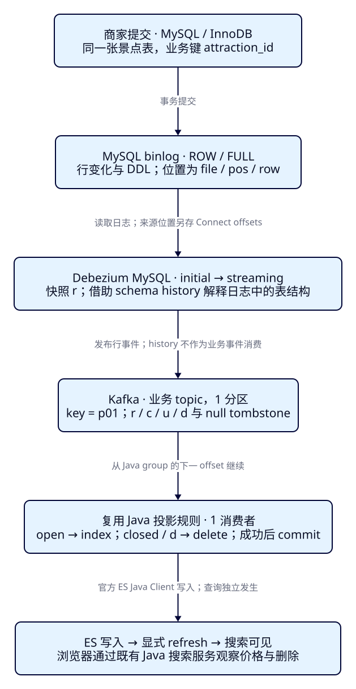
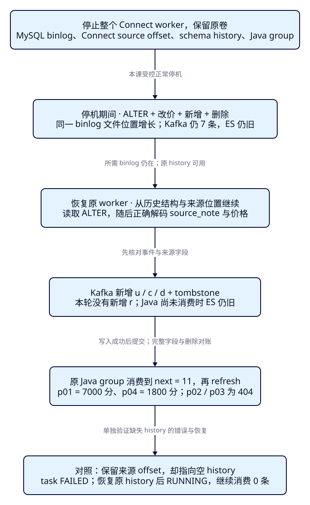

换成MySQL，
哪些同步条件和恢复证据不同？
旅游商家的业务库换成MySQL后，游客仍然希望游船涨价能更新、景点下架能退出搜索。F37的Java投影和ES查询规则可以复用，但把连接地址从PG改成MySQL并不足以完成迁移。本课独立运行第二套链路，复现同一组资料变化，逐项核对行日志、读取权限、表结构历史与恢复位置。
学完能用输出证明什么
- 解释ROW、FULL、initial快照与streaming分别解决什么问题；核对MySQL实际变量，证明CDC账户能读取和复制，却不能修改业务价格。
- 用当前MySQL制品的r/c/u/d、完整before和tombstone，与复用的Java index/delete、消费提交及ES搜索结果逐项对应。
- 在原卷与来源位置保留时恢复停机期间的DDL和数据变化；用空schema history导致的失败与修复，解释为什么仅有offset还不够。
本课目录
图解跳转：01 · MySQL变化到搜索 · 02 · 恢复需要哪些证据
1. 游客的搜索契约不变，来源的读取契约变了
Elasticsearch仍保存用于检索的派生文档，MySQL维护业务事务。商家修改MySQL并不会自动修改ES中的同名文档；需要先捕获变化，再由Java执行投影规则。我们沿用F37的稳定业务键：attraction_id既是事件key中的键，也是ES的_id；金额始终为整数分，6000表示60元。
本机观察窗继续搜索“西湖”、城市HZ、200元以内、指定中心3km以内。初始p01/60元与p02/0元；新增p03、改价和下架后为p01/65元与p03/30元；物理删除p03后只剩p01；连接器停机时保持旧卡，恢复并refresh后为p01/70元与p04/18元。结果相同，能让我们把注意力放在数据库差异上。
本课只有一张已经包含搜索所需字段的景点表。城市、标签或房型关联仍未自动组装；多表投影留在F39。F37和F38各用自己的Compose项目、卷、topic、消费组和索引，串行学习即可，不要求PG同时运行。
2. 先记录行变化，再把变化解释成搜索事件
MySQL的binlog记录供复制等用途读取的变更。本课读取binlog，不读取InnoDB redo log，也不在业务代码里轮询更新时间。ROW要求数据变化以行事件记录；FULL要求记录完整行映像。二者职责不同：只写ROW不能替代FULL。ROW针对数据行，ALTER这样的DDL仍以结构变更语句记录。我们还显式把binlog_row_value_options设为空，避免部分JSON值记录改变前提。本课没有JSON列。
已有p01/p02不是安装连接器之后的新操作。Debezium先读取初始一致快照，用r事件带入当前行，再从与快照衔接的日志位置进入streaming，后续新增、修改、删除用c/u/d表达。r不是把早年每一次业务修改重新播放；initial也不表示每次重启都重新快照。原位置和历史可用时，本轮正常重启继续读增量。
binlog中的行需要按当时的列结构解释。Debezium把结构变化及其来源位置写入专属的schema history topic，恢复时据此还原相应结构。它与存放景点r/c/u/d的业务topic分开；Java只消费业务topic。本课把公开schema change事件关闭，内部history仍然必须存在。配置语义见Debezium 3.3 MySQL配置。

3. 独立profile，先验证读日志的资格
Compose项目为es-framework-f38，所有服务在mysql profile中：MySQL8.4.5、Kafka broker4.0.1、Debezium Connect3.3.1.Final、ES9.4.0。前三个镜像锁定digest；ES/Lucene为9.4.0/10.4.0。Connect镜像内Kafka Connect4.1.0与外部broker和Java Kafka客户端4.0.1分别记录。应用沿用Boot4.0.8、JDK25.0.4.1+1、官方Java与Rest5 Client9.4.8；ES内置JVM26.0.1另列。固定教学制品不是最新补丁建议。
MySQL不发布宿主端口；ES20238、Kafka29238、Connect18238、观察窗18088只绑定回环。随机管理员和CDC口令仅留被忽略的infra/f38/.local，目录0700、文件0600，已有文件或本课卷时init拒绝覆盖。管理员mysql客户端读取本机cnf秘密文件，连接器由服务端FileConfigProvider读密码。这个合成数据环境显式无ES认证、Kafka/Connect明文，MySQL连接也禁用TLS；回环不等于生产安全隔离，部署安全按F35另行设计。
cd projects/travel-search
python3 labs/f38/lab.py init --out /tmp/f38-init
python3 labs/f38/lab.py start --out /tmp/f38-setup
cd backend
./mvnw -B -ntp clean package dependency:build-classpath -Dmdep.outputFile=target/f38-classpath.txt
cd ..
backend/mvnw -B -ntp -f labs/f38/pom.xml dependency:build-classpath -Dmdep.outputFile=target/kafka-classpath.txtMySQL服务器标识为1838；连接器扮演复制客户端，database.server.id为54038，必须避开同一复制拓扑中的其他标识。本课显式关闭GTID，使用同一来源的文件/位置恢复；没有验证GTID切换或主备接管。binlog保留参数设604800秒，不能把它解释成连接器拥有一个会永久钉住日志的PG slot。完整配置、制品和实际身份见运行记录。
展开完整Compose：服务、profile、端口、卷和显式参数
name: es-framework-f38
services:
mysql:
profiles: [mysql]
image: mysql:8.4.5@sha256:679e7e924f38a3cbb62a3d7df32924b83f7321a602d3f9f967c01b3df18495d6
command: [mysqld, --server-id=1838, --log-bin=mysql-bin, --binlog-format=ROW, --binlog-row-image=FULL, --binlog-row-value-options=, --binlog-expire-logs-seconds=604800, --gtid-mode=OFF, --enforce-gtid-consistency=OFF, --innodb-buffer-pool-size=64M, --mysqlx=0]
environment:
MYSQL_ROOT_PASSWORD_FILE: /run/secrets/mysql-password
secrets: [mysql-password, admin-cnf, cdc-cnf]
volumes:
- mysql-data:/var/lib/mysql
- ../../data/f38:/lesson:ro
mem_limit: 512m
healthcheck:
test: [CMD, mysqladmin, --defaults-extra-file=/run/secrets/admin-cnf, ping, --silent]
interval: 3s
timeout: 3s
retries: 60
kafka:
profiles: [mysql]
image: apache/kafka:4.0.1@sha256:9a129e03121d46d74349a480f8f17082df3dd411b28281c9eabb95cf096370b9
environment:
CLUSTER_ID: ZjM4bGFiLXNpbmdsZS1ub2Rl
KAFKA_NODE_ID: 1
KAFKA_PROCESS_ROLES: broker,controller
KAFKA_CONTROLLER_QUORUM_VOTERS: 1@kafka:9093
KAFKA_LISTENERS: INTERNAL://:9092,CONTROLLER://:9093,EXTERNAL://:9094
KAFKA_ADVERTISED_LISTENERS: INTERNAL://kafka:9092,EXTERNAL://127.0.0.1:29238
KAFKA_LISTENER_SECURITY_PROTOCOL_MAP: INTERNAL:PLAINTEXT,CONTROLLER:PLAINTEXT,EXTERNAL:PLAINTEXT
KAFKA_CONTROLLER_LISTENER_NAMES: CONTROLLER
KAFKA_INTER_BROKER_LISTENER_NAME: INTERNAL
KAFKA_OFFSETS_TOPIC_REPLICATION_FACTOR: 1
KAFKA_OFFSETS_TOPIC_NUM_PARTITIONS: 1
KAFKA_TRANSACTION_STATE_LOG_REPLICATION_FACTOR: 1
KAFKA_TRANSACTION_STATE_LOG_MIN_ISR: 1
KAFKA_GROUP_INITIAL_REBALANCE_DELAY_MS: 0
KAFKA_NUM_PARTITIONS: 1
KAFKA_AUTO_CREATE_TOPICS_ENABLE: "false"
KAFKA_LOG_DIRS: /var/lib/kafka/data
KAFKA_HEAP_OPTS: -Xms256m -Xmx256m
KAFKA_LOG_CLEANER_DEDUPE_BUFFER_SIZE: 16777216
ports: ["127.0.0.1:29238:9094"]
volumes: [kafka-data:/var/lib/kafka/data]
mem_limit: 512m
connect:
profiles: [mysql]
image: quay.io/debezium/connect:3.3.1.Final@sha256:18ad5f606365b69133fec658d63b37483a54af171b4c9561e00e87c0303ea443
environment:
BOOTSTRAP_SERVERS: kafka:9092
GROUP_ID: f38-connect
CONFIG_STORAGE_TOPIC: f38-connect-configs
OFFSET_STORAGE_TOPIC: f38-connect-offsets
STATUS_STORAGE_TOPIC: f38-connect-status
CONNECT_CONFIG_STORAGE_REPLICATION_FACTOR: 1
CONNECT_OFFSET_STORAGE_REPLICATION_FACTOR: 1
CONNECT_STATUS_STORAGE_REPLICATION_FACTOR: 1
CONNECT_OFFSET_STORAGE_PARTITIONS: 1
CONNECT_STATUS_STORAGE_PARTITIONS: 1
OFFSET_FLUSH_INTERVAL_MS: 1000
CONNECT_CONFIG_PROVIDERS: file
CONNECT_CONFIG_PROVIDERS_FILE_CLASS: org.apache.kafka.common.config.provider.FileConfigProvider
HEAP_OPTS: -Xms256m -Xmx256m
ports: ["127.0.0.1:18238:8083"]
secrets: [cdc-properties]
depends_on:
mysql: {condition: service_healthy}
kafka: {condition: service_started}
mem_limit: 640m
es:
profiles: [mysql]
image: docker.elastic.co/elasticsearch/elasticsearch:9.4.0
environment:
cluster.name: travel-f38-lab
node.name: travel-f38-es
discovery.type: single-node
xpack.security.enabled: "false"
xpack.ml.enabled: "false"
ES_JAVA_OPTS: -Xms256m -Xmx256m
ports: ["127.0.0.1:20238:9200"]
volumes: [es-data:/usr/share/elasticsearch/data]
mem_limit: 768m
ulimits:
nofile: {soft: 65535, hard: 65535}
volumes:
mysql-data:
kafka-data:
es-data:
secrets:
mysql-password: {file: .local/mysql-password.txt}
admin-cnf: {file: .local/admin.cnf}
cdc-cnf: {file: .local/cdc.cnf}
cdc-properties: {file: .local/cdc.properties}管理员只负责准备隔离表、账户和实验事务；Debezium实际使用f38_cdc。该账户对travel_f38有SELECT，另获快照/复制需要的RELOAD、SHOW DATABASES、REPLICATION SLAVE、REPLICATION CLIENT。没有INSERT/UPDATE/DELETE；两正式轮均实连SELECT成功、改价返回1142拒绝，随后快照和流式读取成功。这里使用可获取全局读锁的MySQL环境与minimal快照锁模式，没有验证托管库的表级锁替代路径。
展开单表、初始样本与授权模板
@CDC_PASSWORD@由prepare从被忽略的秘密文件读取并经stdin替换后执行；不要把这个标记原样粘入mysql，也不要把实际密码写进教程。学习账户的读取范围不等于生产环境的完整最小权限评估。
-- Administrator creates the table. CDC credentials are bound privately through stdin.
CREATE DATABASE travel_f38 CHARACTER SET utf8mb4 COLLATE utf8mb4_0900_ai_ci;
CREATE TABLE travel_f38.attraction (
attraction_id varchar(3) PRIMARY KEY,
name varchar(100) NOT NULL,
city_code varchar(8) NOT NULL,
ticket_price_fen bigint NOT NULL CHECK (ticket_price_fen >= 0),
status varchar(8) NOT NULL CHECK (status IN ('open','closed')),
latitude double NOT NULL,
longitude double NOT NULL
) ENGINE=InnoDB;
INSERT INTO travel_f38.attraction VALUES
('p01', '西湖 游船', 'HZ', 6000, 'open', 30.250, 120.150),
('p02', '西湖 步道', 'HZ', 0, 'open', 30.251, 120.151);
CREATE USER 'f38_cdc'@'%' IDENTIFIED BY @CDC_PASSWORD@;
GRANT SELECT ON travel_f38.* TO 'f38_cdc'@'%';
GRANT RELOAD, SHOW DATABASES, REPLICATION SLAVE, REPLICATION CLIENT ON *.* TO 'f38_cdc'@'%';4. f38-c01：两行快照，先写入，再让搜索可见
在没有其他写入者、没有运行follow消费者的本课干净环境执行prepare。它建单表、两个topic、ES索引及alias，再注册连接器，等到快照事件入Kafka，不自动应用到ES。业务topic是travel_f38.travel_f38.attraction：前一个travel_f38为topic.prefix，后一个为数据库名；它不是两个数据库。
python3 labs/f38/lab.py prepare --out /tmp/f38-manual
bash labs/f38/java.sh inspect
bash labs/f38/requests.sh inspect
bash labs/f38/java.sh drain
curl --fail-with-body -sS http://127.0.0.1:20238/tut-f38-attractions-read/_doc/p01
bash labs/f38/requests.sh inspect
bash labs/f38/requests.sh refresh
bash labs/f38/requests.sh inspect先核对connector及唯一task都RUNNING；inspect读取topic而不提交应用组。应看到两个r，key集合为p01/p02，after中价格6000/0。快照source.snapshot会标识快照来源，source中的db/table与本课一致。不要依赖两条r的先后作为业务排序。drain用官方客户端按键写两份open文档，成功后把Java组提交到下一位置2。
索引显式1主0副、dynamic=strict、refresh_interval=-1，名称用whitespace分析器匹配样本中的“西湖”，金额为long且不强制转换。drain后GET p01已6000，SEARCH仍为空；显式_refresh之后，既有搜索服务才返回p01/6000与p02/0。复制进度、写入成功和搜索可见是三个观察点。
展开完整mapping与稳定alias
{
"settings": {
"number_of_shards": 1,
"number_of_replicas": 0,
"refresh_interval": "-1"
},
"mappings": {
"dynamic": "strict",
"properties": {
"attraction_id": {
"type": "keyword"
},
"name": {
"type": "text",
"analyzer": "whitespace"
},
"city_code": {
"type": "keyword"
},
"ticket_price_fen": {
"type": "long",
"coerce": false
},
"currency": {
"type": "keyword"
},
"status": {
"type": "keyword"
},
"location": {
"type": "geo_point"
}
}
}
}{
"actions": [
{
"add": {
"index": "tut-f38-attractions-v001",
"alias": "tut-f38-attractions-read"
}
},
{
"add": {
"index": "tut-f38-attractions-v001",
"alias": "tut-f38-attractions-write",
"is_write_index": true
}
}
]
}展开MySQL连接器完整配置
{
"name": "f38-mysql",
"config": {
"connector.class": "io.debezium.connector.mysql.MySqlConnector",
"tasks.max": "1",
"database.hostname": "mysql",
"database.port": "3306",
"database.user": "f38_cdc",
"database.password": "${file:/run/secrets/cdc-properties:password}",
"database.server.id": "54038",
"database.ssl.mode": "disabled",
"database.allowPublicKeyRetrieval": "true",
"topic.prefix": "travel_f38",
"database.include.list": "travel_f38",
"table.include.list": "travel_f38.attraction",
"snapshot.mode": "initial",
"snapshot.locking.mode": "minimal",
"include.schema.changes": "false",
"schema.history.internal.kafka.bootstrap.servers": "kafka:9092",
"schema.history.internal.kafka.topic": "f38-schema-history",
"schema.history.internal.kafka.recovery.attempts": "10",
"tombstones.on.delete": "true",
"key.converter": "org.apache.kafka.connect.json.JsonConverter",
"key.converter.schemas.enable": "false",
"value.converter": "org.apache.kafka.connect.json.JsonConverter",
"value.converter.schemas.enable": "false",
"poll.interval.ms": "200"
}
}table.include.list限定业务数据捕获表；schema.history不是另一个Java消费入口。history topic预建为1分区，cleanup.policy=delete、retention.ms=-1、retention.bytes=-1；本课不对它设与业务topic相同的7天删除窗口。
5. Java只改来源适配，保留投影与提交规则
F38Consumer沿用F37的单分区消费、官方ES客户端连接、index/delete、逐条成功后提交和inspect/drain/follow三个入口。端点、topic、group、alias换成本课专属名字；来源校验改为MySQL的db/table，不要求PG的schema字段。完整文件见F38Consumer.java，没有新增Controller或前端。
以下是完整投影分支：原始信封r/c/u的open行按业务键覆盖写入；closed行和d执行delete；Kafka null值是tombstone，原d已处理删除，本分支不再次写ES。删除后的not_found可接受，传输或其他写入异常会退出，不继续提交该条。未知操作、来源或主键形状被拒绝。
static String apply(ElasticsearchClient es, ConsumerRecord<String, String> record) throws Exception {
JsonNode key = JSON.readTree(record.key());
String id = key.path("attraction_id").asString();
if (!id.matches("p[0-9]{2}")) throw new IllegalArgumentException("Invalid business key");
// Debezium's d event performed the deletion; a null Kafka value is a compaction marker.
if (record.value() == null) return "tombstone";
JsonNode event = JSON.readTree(record.value());
JsonNode source = event.path("source");
if (!"travel_f38".equals(source.path("db").asString())
|| !"attraction".equals(source.path("table").asString())) {
throw new IllegalArgumentException("Unexpected event source");
}
String op = event.path("op").asString();
if ("d".equals(op)) {
if (!event.path("after").isNull()
|| !id.equals(event.path("before").path("attraction_id").asString())) {
throw new IllegalArgumentException("Delete key/shape mismatch");
}
// A missing document is an acceptable result for this key-based delete.
return "delete:" + es.delete(d -> d.index(WRITE).id(id)).result().jsonValue();
}
if (!List.of("r", "c", "u").contains(op)) throw new IllegalArgumentException("Unsupported operation");
JsonNode after = event.path("after");
if (!id.equals(after.path("attraction_id").asString())) {
throw new IllegalArgumentException("Key/after mismatch; primary key changes are out of scope");
}
String status = after.path("status").asString();
if ("closed".equals(status)) {
return "delete:" + es.delete(d -> d.index(WRITE).id(id)).result().jsonValue();
}
if (!"open".equals(status)) throw new IllegalArgumentException("Unknown status");
var document = Map.of(
"attraction_id", id, "name", after.path("name").asString(),
"city_code", after.path("city_code").asString(),
"ticket_price_fen", after.path("ticket_price_fen").asLong(),
"currency", "CNY", "status", status,
"location", Map.of("lat", after.path("latitude").asDouble(),
"lon", after.path("longitude").asDouble()));
var body = JsonData.fromJson(JSON.writeValueAsString(document));
return "index:" + es.index(i -> i.index(WRITE).requireAlias(true).id(id).document(body)).result().jsonValue();
}显式选出的字段保持ES文档契约，后面新增source_note不会自动泄漏到strict mapping；新增业务字段是否进入搜索文档仍是投影设计。当前样本没有缺值、主键变更、TRUNCATE或复杂类型转换，不能把这段单表代码当成通用同步器。
String result = apply(es, record); // an exception exits before committing this record
consumer.commitSync(Map.of(tp, new OffsetAndMetadata(record.offset() + 1)));
System.out.println(JSON.writeValueAsString(Map.of("kind", "applied",
"partition", record.partition(), "offset", record.offset(),
"key", JSON.readTree(record.key()), "result", result,
"committed_next", record.offset() + 1)));提交的是此分区下一offset；enable.auto.commit=false。写入与提交之间仍可能重复，固定_id不防旧事件覆盖新文档。任意崩溃、乱序、重试和DLQ是F40的范围，本课不声称恰好一次。要持续观察可单独运行follow，不要与drain同时用同一组；drain只用于暂停其他写入的有限观察边界。
持续消费与本机观察窗的启动方式
bash labs/f38/java.sh follow另开JDK25终端启动既有Boot服务：
ES_URL=http://127.0.0.1:20238 ES_INDEX=tut-f38-attractions-read ES_CA_FILE= ES_API_KEY_FILE= APP_PORT=18088 java -Xms64m -Xmx192m -jar backend/target/travel-search-0.7.0.jar打开本机18088观察窗，按默认西湖/HZ/200元/3km搜索；卡片显示ID、元价，JSON中保留整数分与esRequest。浏览器→Java→ES，可将esRequest送到本课read alias重放；Pages不访问本机服务。自动run会启动自己的18088进程，手工方式与run二选一。
6. f38-c02：同组变化，MySQL的before要重新观察
changes.sql逐条提交新增p03/3000、p01改6500、p02改closed；inspect新增c/u/u。这时Kafka已经新，Java尚未消费，ES仍是旧两张卡。drain后GET p01变6500、p02为404；refresh后才搜索到p01/6500与p03/3000。下架在MySQL仍是一行更新，Java按搜索投影约定把它删除。
bash labs/f38/requests.sh changes
bash labs/f38/java.sh inspect
bash labs/f38/requests.sh inspect
bash labs/f38/java.sh drain
curl --fail-with-body -sS http://127.0.0.1:20238/tut-f38-attractions-read/_doc/p01
bash labs/f38/requests.sh refresh
bash labs/f38/requests.sh inspect展开本课三条业务变更SQL
-- Each statement is its own committed transaction. No other writer in this lab.
INSERT INTO travel_f38.attraction VALUES
('p03', '西湖 花园', 'HZ', 3000, 'open', 30.252, 120.152);
UPDATE travel_f38.attraction SET ticket_price_fen = 6500 WHERE attraction_id = 'p01';
UPDATE travel_f38.attraction SET status = 'closed' WHERE attraction_id = 'p02';随后物理删除p03，再inspect。当前ROW/FULL实测的d.before含p03、名字“西湖 花园”和ticket_price_fen=3000，after=null；下一条是同key、value=null的tombstone。这个完整旧行与F37默认副本标识下的非主键占位不同，不能把PG观察结果直接写成MySQL事实。Java仍按稳定key删除，不依赖旧价格选ES文档。
bash labs/f38/requests.sh delete
bash labs/f38/java.sh inspect
bash labs/f38/java.sh drain
bash labs/f38/requests.sh refresh
bash labs/f38/requests.sh inspect展开当前MySQL制品的一条完整删除记录
{
"kind": "event",
"partition": 0,
"offset": 5,
"key": {
"attraction_id": "p03"
},
"value": {
"before": {
"attraction_id": "p03",
"name": "西湖 花园",
"city_code": "HZ",
"ticket_price_fen": 3000,
"status": "open",
"latitude": 30.252,
"longitude": 120.152
},
"after": null,
"source": {
"version": "3.3.1.Final",
"connector": "mysql",
"name": "travel_f38",
"ts_ms": 1793277807000,
"snapshot": "false",
"db": "travel_f38",
"sequence": null,
"ts_us": 1793277807000000,
"ts_ns": 1793277807000000000,
"table": "attraction",
"server_id": 1838,
"gtid": null,
"file": "mysql-bin.000003",
"pos": 5948,
"row": 0,
"thread": 185,
"query": null
},
"transaction": null,
"op": "d",
"ts_ms": 1793277807103,
"ts_us": 1793277807103203,
"ts_ns": 1793277807103203708
}
}drain本次处理两条记录，但只对ES发一次delete；应用组next/end到7，refresh后只剩p01/6500。原始事件、Kafka offset、SQL与完整_source对照见两轮执行记录。不能仅凭总数相同推断下架、金额和删除都正确。
展开手工REST入口与完整诊断查询
#!/usr/bin/env bash
set -euo pipefail
cd "$(dirname "$0")/../.."
F38_ES=http://127.0.0.1:20238
case "${1:-}" in
changes|delete|offline)
docker compose --profile mysql -f infra/f38/compose.yaml exec -T mysql mysql --defaults-extra-file=/run/secrets/admin-cnf --batch --raw --skip-column-names --default-character-set=utf8mb4 < "data/f38/$1.sql"
;;
inspect)
docker compose --profile mysql -f infra/f38/compose.yaml exec -T mysql mysql --defaults-extra-file=/run/secrets/admin-cnf --batch --raw --skip-column-names --default-character-set=utf8mb4 < data/f38/positions.sql
curl --fail-with-body -sS http://127.0.0.1:18238/connectors/f38-mysql/status
curl --fail-with-body -sS http://127.0.0.1:18238/connectors/f38-mysql/offsets
curl --fail-with-body -sS -X POST "$F38_ES/tut-f38-attractions-read/_search?allow_partial_search_results=false" -H 'Content-Type: application/json' --data-binary @search/f38/all.json
;;
refresh)
curl --fail-with-body -sS -X POST "$F38_ES/tut-f38-attractions-v001/_refresh"
;;
stop-connect|start-connect)
if [[ "$1" == stop-connect ]]; then
docker compose --profile mysql -f infra/f38/compose.yaml stop connect
else
docker compose --profile mysql -f infra/f38/compose.yaml start connect
fi
;;
*) echo 'Usage: requests.sh changes|delete|offline|inspect|refresh|stop-connect|start-connect' >&2; exit 2 ;;
esac{
"size": 20,
"track_total_hits": true,
"query": {
"match_all": {}
},
"sort": [
{
"attraction_id": "asc"
}
]
}7. 位置回答读到哪，history回答怎样解释
执行positions.sql，先核对版本、server_uuid、server_id、ROW/FULL、保留值和GTID状态，再看SHOW BINARY LOG STATUS与SHOW BINARY LOGS。前者报告当前binlog文件及位置，后者列仍存在的文件；MySQL8.4使用这个语句名称。权限和字段依据见MySQL8.4命令说明。这些值依赖来源实例，不能跨服务器比较pos大小。
SELECT JSON_OBJECT('version',VERSION(),'server_uuid',@@server_uuid,'server_id',@@server_id,
'log_bin',@@log_bin,'binlog_format',@@binlog_format,'binlog_row_image',@@binlog_row_image,
'binlog_row_value_options',@@binlog_row_value_options,
'binlog_expire_logs_seconds',@@binlog_expire_logs_seconds,'gtid_mode',@@gtid_mode);
SHOW BINARY LOG STATUS;
SHOW BINARY LOGS;curl --fail-with-body -sS http://127.0.0.1:18238/connectors/f38-mysql/offsets
docker compose --profile mysql -f infra/f38/compose.yaml exec -T kafka /opt/kafka/bin/kafka-consumer-groups.sh --bootstrap-server kafka:9092 --describe --group f38-es-v1| 对象 | 在本课哪里 | 能说明什么 |
|---|---|---|
| 来源日志坐标 | MySQL file/pos，事件另有row；GTID关闭 | 日志中的来源位置，不是Java消费offset |
| 连接器source offset | f38-connect-offsets | Debezium恢复读取所需的来源进度；用REST查看 |
| schema history | f38-schema-history，1分区、不限时/字节删除 | 按来源位置重建表结构，不保存ES写入确认 |
| Java group offset | f38-es-v1，业务topic分区0 | 应用已成功处理到的下一条位置：2→7→11 |
| 搜索可见 | read alias上的_search | 必须另行refresh与字段/删除核对，位置不替代正确性 |
一笔MySQL事务可涉及多条行事件；来源坐标和Kafka offset是不同坐标系。不能把source.pos=某数字写成“ES版本”，也不能用跨分区offset比较全局先后。history记录里的DDL与位置要成套保留；只备份当前CREATE TABLE，未必能解释历史日志中的旧结构。
8. f38-c03：停机期间加一列，再恢复改价与删除
正常停止整个Connect worker，保留MySQL卷和Kafka卷。先记录数据库binlog位置，然后执行offline.sql：新增source_note列、p01改7000并给出新列值、新增p04/1800、物理删除仍在SQL中的closed p02。新的DDL不产生景点业务r/c/u/d，但会影响后续行的解释。
-- Connect is stopped. DDL tests MySQL schema-history recovery; Java projects only its known fields.
ALTER TABLE travel_f38.attraction ADD COLUMN source_note varchar(64) NOT NULL DEFAULT 'local';
UPDATE travel_f38.attraction SET ticket_price_fen = 7000, source_note = 'binlog-after-restart'
WHERE attraction_id = 'p01';
INSERT INTO travel_f38.attraction
(attraction_id,name,city_code,ticket_price_fen,status,latitude,longitude,source_note)
VALUES ('p04','西湖 码头','HZ',1800,'open',30.253,120.153,'new-row');
DELETE FROM travel_f38.attraction WHERE attraction_id = 'p02';bash labs/f38/requests.sh stop-connect
docker compose --profile mysql -f infra/f38/compose.yaml exec -T mysql mysql --defaults-extra-file=/run/secrets/admin-cnf --batch --raw --skip-column-names < data/f38/positions.sql
bash labs/f38/requests.sh offline
docker compose --profile mysql -f infra/f38/compose.yaml exec -T mysql mysql --defaults-extra-file=/run/secrets/admin-cnf --batch --raw --skip-column-names < data/f38/positions.sql
bash labs/f38/java.sh inspect
bash labs/f38/requests.sh start-connect
curl --fail-with-body -sS http://127.0.0.1:18238/connectors/f38-mysql/status
bash labs/f38/java.sh inspect
bash labs/f38/requests.sh inspect
bash labs/f38/java.sh drain
bash labs/f38/requests.sh refresh
bash labs/f38/requests.sh inspect
bash labs/f38/java.sh drain两次positions输出在本轮仍是同一binlog文件，位置向前；Kafka仍7条，ES仍只有p01/6500。这证明变更留在来源而未进入消息链路；Java lag=0并不能证明数据库和搜索一致。这里没有PG slot inactive或restart_lsn字段，也不应寻找同名MySQL slot。
启动原worker后，等REST恢复、connector/task均RUNNING，再反复inspect到新增u p01、c p04、d p02与tombstone四条；不靠固定等待秒数猜完成。实测没有新增r，u.after.source_note为binlog-after-restart；内部history出现ADD COLUMN source_note。Java尚未消费前ES仍旧，再drain到11、refresh，与当前SQL开放行逐字段一致：p01/7000、p04/1800，p02/p03 GET404。再次drain处理0条。

自动run还有一个可恢复反例：保留原source offsets，把连接器临时指向新建的空history topic，唯一task变FAILED，trace指出schema history缺失；原history未删除。把完整配置恢复到原topic后任务RUNNING，事件仍11条，再次drain为0。它证明在当前已完成快照的恢复状态，仅有文件位置不足以替代表结构历史；不是测试一次全新快照能否初始化空history。
手工复现空history失败与恢复
仅在完成本轮、没有写入和其他消费者时执行。probe-history检查连接器和事件前提，创建f38-schema-history-empty、保存失败状态，再恢复原配置并删除临时topic；异常中断时可按下面命令恢复本课已发布配置。完整实现位于lab.py的missing_history_probe。
python3 labs/f38/lab.py probe-history --out /tmp/f38-history-probe
# 仅当反例异常中断需要还原时，执行下面两条
python3 -c 'import json; print(json.dumps(json.load(open("cdc/f38/connector.json"))["config"]))' > /tmp/f38-connector-config.json
curl --fail-with-body -sS -X PUT http://127.0.0.1:18238/connectors/f38-mysql/config -H 'Content-Type: application/json' --data-binary @/tmp/f38-connector-config.json9. PG与MySQL：恢复条件不能只换名词
| 问题 | F37 PG | F38 MySQL实测前提 |
|---|---|---|
| 行变化来源 | WAL / logical / pgoutput | binlog / ROW / FULL |
| 捕获范围 | publication列出表，连接器再过滤 | database/table.include.list；读取权限另核对 |
| 删除旧值 | 默认副本标识下非键占位 | 本课d.before含完整p03旧行 |
| 恢复所需状态 | 原slot、所需WAL、来源位置 | 同一来源、所需binlog、来源位置与内部history |
| 停机时日志保留 | slot提出保留要求，仍受配置/失效边界影响 | 本课7天自动清理配置；无slot为离线连接器钉住文件 |
| 共同的下游条件 | Kafka业务历史、Java组、投影成功、refresh与完整结果核对 | |
binlog_expire_logs_seconds=604800是自动清理的时间配置，不是容量上限或任意停机后的续传保证。运维手工PURGE也可能改变可用文件。恢复前要把来源offset所需文件与SHOW BINARY LOGS对应，确认history和Kafka业务记录仍在；文件已丢就不能靠伪造更大的offset补回。MySQL对离线复制者的日志清理注意事项见PURGE BINARY LOGS说明。
若连续日志链已断，应先明确数据缺口，再设计新快照、重建与对账；本课没有实施自动修复。不能仅重置Java组到earliest就认为数据库缺失变化会重新出现。两正式轮只验证同一MySQL主节点、短时正常停启、原卷和日志仍在；未灌满磁盘、等待7天过期、删除必需binlog、做崩溃/HA/GTID故障转移或测性能。
10. 成套清理，再从干净条件重做
运行入口、手工路径与输出说明见本课实验README。自动run执行同样3案例，外加空history错误/恢复，并保留SQL、原始事件、三处位置、history、完整ES与REST↔Java结果。它会创建和停止自己的18088搜索进程；不要与手工服务或follow同时运行。身份检查、轮询、清理和浏览器附加HTTP分别计数。
python3 labs/f38/lab.py run --out /tmp/f38-round1
python3 labs/f38/lab.py cleanup --out /tmp/f38-cleanup1
python3 labs/f38/lab.py run --out /tmp/f38-round2
python3 labs/f38/lab.py cleanup --out /tmp/f38-cleanup2
python3 labs/f38/lab.py down --out /tmp/f38-downcleanup先核对本课身份并拒绝外来业务索引/topic/connector，再stop连接器、清除它的source offsets并删除连接器，删除travel_f38数据库与f38_cdc用户、本课业务/history topic、Java组及ES索引和alias。三个具名卷、Connect内部topic和.local保留，down不使用-v。只删ES索引、保留Java组的11位置会让重做漏掉旧资料；只删history、保留来源offset则会重现恢复失败。
若Connect正停着，先start connect并等HTTP恢复；自己开的follow和观察窗用原终端Ctrl+C结束，等组无活动成员再清理。中断在空history反例时先恢复原连接器配置，再清理。所有--out要求新目录，保留旧失败证据；只操作F38具名资源，不清其他课的卷或9200/9201。
至此，两种数据库都能把单表变化送到同一个搜索契约。下一课F39要解决“标签或房型变化影响哪些父实体、旧关联怎样移除”，需要Java路由受影响的业务键并重新组装多表投影。本课不提前实现这部分。
依据与验收边界
MySQL8.4 binlog参数、Debezium3.3 MySQL连接器用于核对配置语义；当前版本行为以两轮真实执行为证据。章节验收记录单列内容自审、图生成、HTTP/视觉与运行限制。固定版本不等于经过安全或性能推荐评估。
能力检查：先解释，再展开答案
1. MySQL已启用binlog，却用了STATEMENT；只在连接器中改成ROW有用吗？
没有。ROW/FULL是来源服务器实际产生记录的前提，要核对实际MySQL变量；连接器不能把未记录的行映像补出来。本课显式服务器参数与当前值一致。
2. snapshot.mode=initial，为什么本轮正常重启没有重新出现两条r？
initial先解决首次已有数据入场；原来源offset、日志和history有效时从保存位置续读。不能把initial理解为每次启动都重新全量。
3. p02下架产生u，为什么ES删除？之后物理删除又delete:not_found，算失败吗？
closed是投影排除条件，SQL行仍存在。物理d再按同一个键删除时目标可能已经没有，本课接受not_found，不因此丢掉后续记录。
4. F37的d.before价格占位为0，能推断F38也如此吗？
不能。本课ROW/FULL实测p03旧价为3000，必须按当前制品与记录前提观察。消费者仍以稳定业务键定位删除，不以旧价格作为键。
5. 已保存file/pos和Java next=11，删除schema history再启动是否足够恢复？
不足。来源进度不包含恢复当时表结构所需的全部历史。本轮指向空history后task确实FAILED，恢复原history才正常，二者职责不同。
6. Connect停机，Java lag=0，网页还显示65元，应该只做refresh吗？
先查来源与Kafka。停机中MySQL已7000而Kafka仍7条，ES没有新写入，refresh不会创造丢在来源的变化。恢复捕获、消费、写入后再核对搜索可见。
7. 加source_note后事件中有新字段，为什么strict ES mapping没有报错？
Java显式选择搜索契约中的字段，没有把整个after原样写入。history帮助正确解码来源结构，不自动改变ES mapping或业务投影。
8. 停机超过日志保留窗口后，重新创建同名topic或增大offset能补回变化吗？
同名和更大的位置都不能恢复已经丢失的日志。先确认连续性缺口，按可信新快照/重建及对账恢复；本课未验证长停机、binlog清除和自动重建。
实际陷阱
速记
| 问题 | 本课选择 | 判断证据 |
|---|---|---|
| 捕获什么记录 | ROW / FULL，原始JSON信封 | 实际变量、完整before、r/c/u/d |
| 已有数据怎样进来 | initial快照→streaming | 先两个r，正常恢复无新增r |
| 结构怎样恢复 | 独立schema history | 停机DDL正确解码；空history失败和还原 |
| Java怎样写 | open index；closed/d delete | 固定键、完整_source、404与next=11 |
| 搜索何时变新 | 写入后显式_refresh | GET/SEARCH分开观察，五个稳定点 |
| 怎样证明恢复 | 身份、日志、位置、history和下游状态 | 同一来源续读，最终p01/7000、p04/1800与删除核对 |
本课心法：复用搜索契约，重新验证来源条件；位置、结构、写入和可见性各给一份证据。